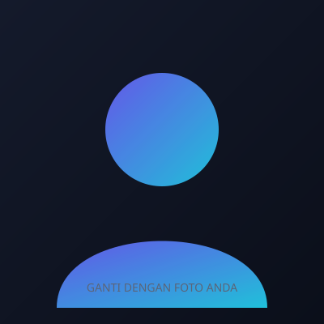
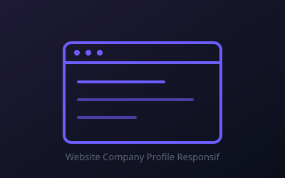
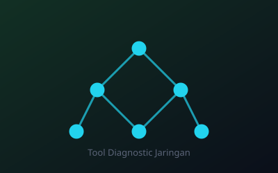
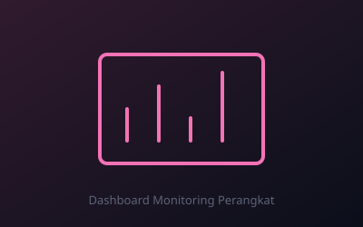
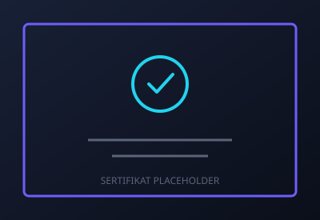

Sistem Ticketing IT Support
Aplikasi sederhana untuk mencatat & melacak keluhan/tiket masalah IT dari pengguna.
Halo, perkenalkan saya
Mahasiswa Teknik Komputer yang bersemangat membangun karier di bidang IT Support — terbiasa menangani troubleshooting hardware & software, dasar jaringan komputer, serta selalu antusias mempelajari teknologi baru.

Profil singkat tentang semangat belajar dan arah karier saya di dunia IT.
Saya memulai perjalanan teknis saya di SMK Taruna Bangsa, jurusan Rekayasa Perangkat Lunak, di mana saya membangun fondasi di dua sisi sekaligus: pengembangan aplikasi web dengan HTML, CSS, dan Laravel, serta pengoperasian sistem berbasis Linux, perakitan, dan troubleshooting perangkat keras PC. Kini saya melanjutkan studi di Universitas Jenderal Soedirman untuk memperdalam pemahaman saya di bidang teknologi informasi.
Saya percaya fondasi teknis yang kuat harus diimbangi dengan kemampuan problem solving dan komunikasi yang baik saat membantu pengguna. Karena itu saya terus mengasah kemampuan troubleshooting hardware & software, dasar administrasi sistem Linux, serta terbiasa menggunakan Git untuk mengelola project.
Target saya adalah berkarier sebagai IT Support yang menguasai troubleshooting hardware dan software, administrasi sistem Linux, serta mampu menerjemahkan masalah teknis ke dalam solusi yang mudah dipahami pengguna.
Perakitan, perawatan & troubleshooting perangkat keras komputer.
Instalasi, konfigurasi sistem operasi, dan dasar pengembangan web.
Pemahaman dasar konfigurasi & troubleshooting jaringan komputer.
Analisis & penyelesaian masalah teknis secara sistematis.
Kombinasi kemampuan teknis IT Support dengan dasar pengembangan web.
Beberapa contoh project yang merepresentasikan kemampuan teknis saya.
Aplikasi sederhana untuk mencatat & melacak keluhan/tiket masalah IT dari pengguna.

Website profil perusahaan dengan desain modern & tampilan responsif di semua perangkat.

Utility sederhana untuk memeriksa status koneksi, ping, dan kecepatan jaringan.

Dashboard visual untuk memantau status & performa perangkat secara sederhana.
Timeline singkat perjalanan belajar dan pengalaman saya di dunia IT.
Memulai pendidikan di SMK Taruna Bangsa, jurusan Rekayasa Perangkat Lunak. Membangun dasar teknis di dua sisi: pengembangan aplikasi web (HTML, CSS, Laravel) serta pengoperasian sistem berbasis Linux dan perakitan sekaligus troubleshooting perangkat keras PC.
Lulus dari SMK Taruna Bangsa dan melanjutkan studi di Universitas Jenderal Soedirman, memperdalam pemahaman di bidang teknologi informasi.
Berkarier sebagai IT Support yang menguasai troubleshooting hardware dan software, administrasi sistem Linux, serta mampu menerjemahkan masalah teknis ke dalam solusi yang mudah dipahami pengguna.
Program yang sedang saya rencanakan untuk memperkuat kompetensi IT Support secara formal.

Google · via Coursera
Target: 2026 Lihat ProgramCompTIA
Target: 2027 Lihat ProgramCisco Networking Academy
Target: 2027 Lihat ProgramThe Linux Foundation
Target: 2028 Lihat ProgramTools & teknologi yang saya gunakan dalam belajar maupun mengerjakan project.